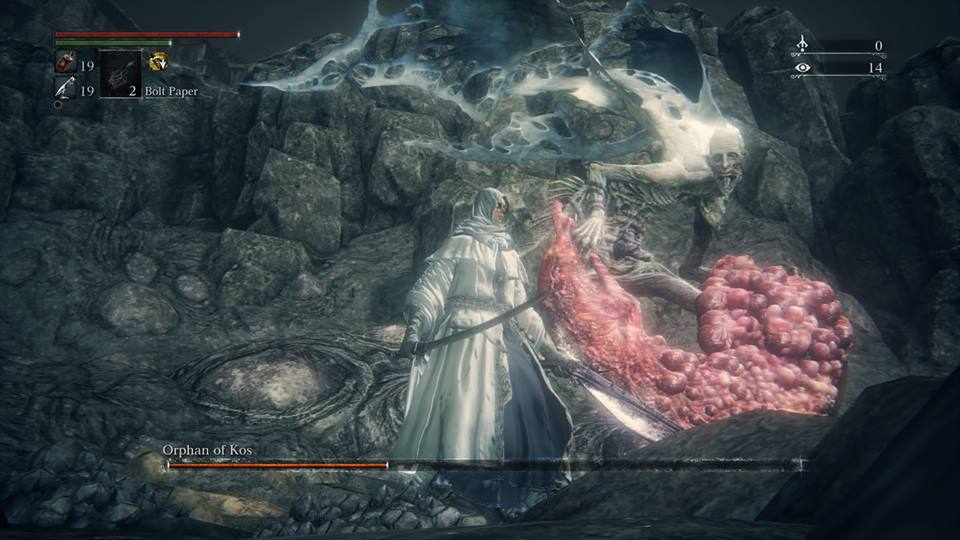

Orphan of Kos (ゴースの遺子 Gōsu no ishi lit. "Orphan of Gos") is a Great One Boss in Bloodborne. He is considered the final boss of The Old Hunters DLC. He is the son of Kosm.
"Mercy for the poor wizened child, mercy."
Orphan of Kos General Information
The boss will not be visible before or while entering the boss room, only after the initial cutscene will the boss be present, back turned to the player. Orphan will never aggro when entering the boss room, and will only aggro once the player is about 1/3 of the way towards him.
This boss has two noticeable phases:
- Phase 1:
- Once engaged, the orphan will turn to the player and attack immediately.
- Has a significant amount of moves with varying ranges and speeds.
- Phase 2:
- The Orphan will bite into the placenta-like weapon and transform.
- Becomes slightly larger and gains a new set of moves, as well as keeping and enhancing some previous ones.
- Is far more mobile making it harder to keep track of and stay in control.
Locations
- Fishing Hamlet Coast
Drops
- 60,000 Blood Echoes , NG +3 (222,375), NG+4 (266,850), NG+5 (355,800), NG+6 (444,750)
- Kos Parasite
Strategy
- The Orphan of Kos is a highly aggressive boss that is extremely mobile, especially in Phase 2, that can also utilize ranged attacks. Be prepared for great leaps and long range attacks.
- Stick to his left side (right for you).
- Mid range will be dangerous and hard to avoid attacks. Hugging his left is the place where you want to be. Circle him while attacking and quickly close any distance when he backs away. The second phase will make it easier as avoiding the jump attack lets you get some free hits in.
- Parryable in both phases.
- During phase 1 the HP restored by Blood Rapture runes is quadrupled! Therefore, it is better to rely on using visceral attacks to restore your health, and save your blood vials for phase 2.
- Augur of Ebrietas works well when he uses his jump attack in the first phase.
- When he summons electricity by screeching, quickly move to the entrance of the boss arena. Alternatively, look toward the large corpse of Kos, where the bolt of lightning strikes the ground. "Waves" of electricity will move outward radially from this point. These "waves" have sharp demarcations and can be rolled through and/or walked/ran around.
- They can also be more easily avoided if you stay in the water rather than on land. The bolts originate on Kos' corpse, do not stand near the corpse at all during the fight.
- Once he enters the second phase by performing a shockwave, he will stay in the ground for a couple of seconds. This is your chance to charge up a strong attack (R2) or heal and buff.
- The Orphan is immune to backstabs during this animation, as well as the lightning attack screech, but timing your charged attack to hit at the very end of said animations can score a backstab.
- The boss area for this fight is large, circular and made up of two parts; the beach and the water.
- Don't be afraid to go out over the water, as you can't actually fall in and it doesn't slow you down.
- The beach is sloped and uneven with a few wooden branches sticking out of the ground that you can get stuck on.
- The water area is flat and even and provides a great amount of space.
- Eventually, however, you run into an invisible wall that prevents you from going further, so be aware.
- In phase one, you can easily run under his forward leaping attack and then turn around for a charge attack followed by an easy backstab, plus a quick follow-up jab before he dodges away. Quickstepping or sprinting will carry you too far to attack him before he recovers. You can also bait his forward leaping attack consistently to quickly get through phase one.
- Get far away from the Orphan so he is out of range, be careful though, he might throw his projectile towards you, but this can easily be avoided by rolling or keeping the Kos corpse between you and the Orphan to block it. Eventutally, the Orphan will start running towards you, from here, he will either do one of two moves: his forward leaping attack or an uppercut swing from his placenta blade.
- In phase one, he can be easily staggered by most heavier weapons, or several consecutive hits of a lighter weapons.
- Be mindful of the stagger since it will reset his animation and he can easily punish you with one of his quicker attacks.
- In phase one the Orphan has a very tricky attack which starts off with him reeling back his weapon with one hand a bit and doing a slam while taking a step or two towards the player. This attack can easily be dodged, however, it kicks up some dust from the beach, covering the follow up which is a quick dash towards the player with an uppercut.
- His aerial dive attack in the first phase can be dodged by timing a dodge straight at him. This will result in you ending up behind him for a free attack with a quick weapon.
- Dodging this boss in the first phase can be very easy as long as you pay close attention to which attack he is using. A number of his attacks sweep from one side to the other, and dodging properly into the attack can completely avoid any damage. Dodging in the direction the attack is being swung can result in you taking minor damage or the entire damage from the attack depending on whether you'te hit by the weapon or just by the strand attached to it..
- Below is a full playbook for NG, with a melee character, mobility strat (sprinting, rolling and quick-stepping) only (unfortunately):
- General guidelines before the phases are covered:
- Orphan is a frequent and fast attacker. That means you want the fastest weapon with the fastest R1 possible (Blades of Mercy, Rakuyo, etc.), solid range, and you want to leave yourself as available as possible to quickstep or dodge. You will be R1-ing, and doing rolling R1's, so make sure your weapon can do that as instantaneously as possible. You want NOTHING slower than an untransformed Saw Cleaver's R1.
- Be more careful when using slow weapons, like the tricked Kirkhammer or the tricked Ludwig's Holy Blade. Be more patient with these weapons while tricked, or use the untricked versions for faster attacked with less end lag
- Some attacks can be interrupted with staggering, which can allow the boss to start a new attack.
- This can be used to your advantage, as it is possible to infinitely loop Orphan with parries.
- Some of the boss' attacks have a longer charge up time. Time your dodges correctly and stay calm.
- Orphan is very mobile, be sure to know where you are so you don't get trapped against a wall. Don't be afraid to back away or run towards the middle of the map to increase your space.
- Some attacks may have a shockwave hitbox, make sure to clear the attack range as well as a shockwave's.
- Phase 2 Orphan is far more mobile than Phase 1. Remember to manage your space.
- Orphan is a frequent and fast attacker. That means you want the fastest weapon with the fastest R1 possible (Blades of Mercy, Rakuyo, etc.), solid range, and you want to leave yourself as available as possible to quickstep or dodge. You will be R1-ing, and doing rolling R1's, so make sure your weapon can do that as instantaneously as possible. You want NOTHING slower than an untransformed Saw Cleaver's R1.
- General guidelines before the phases are covered:
- Phase One:
- Your windows are the most generous in this phase. The Orphan is slower to counter people behind his back, but his back-jump attack where he extends his placenta curved sword thingy has a persisting hitbox, and he changes up his timing to catch you off guard. He may also vary this attack by dodging more to the side, and throwing his weapon, so make sure to dodge CLEAR of the hitbox, which includes the cord attatched to the placenta.
- You do NOT want to be in range of his flurry. Use his heavier attacks like his jumping attack, charged overhead slash/slam, etc. to attack instead. HOWEVER, his attack combo where he spins his placenta once or twice is a FALSE window, where he will try to counter you, so that is NOT a window.
- His transition into phase 2 has an AOE explosion that doesn't do any damage, but will knock you on your feet, so don't worry about it. Never tried what happens if you're in the hitbox of his placenta curved sword thingy, though.
- When he throws his placenta ball at you, it has a VERY low tracking arc that is more likely to defeat your attempts at dodging at range. So stay maybe 12 feet from Orphan when he throws these orbs, making sure to be strafing PURELY HORIZONTALLY before you quickstep out (never tested dodge roll), so you have enough distance.
- When he is winding up his charged upward slash, dodge AGAINST his attack vector, not with it. Low damage if you end up where the weapon finally lands, over his left shoulder, but chip damage still stacks over time and he has a lot of health.
- Be wary of an AOE attack, where a placenta ball is shoved into the ground. An explosion will occur after this, so dodge at the correct time or identify the incoming attack quickly enough.
- Be wary of your healing. If timed badly, the use of a Blood Vial may endanger you more than help.
- Phase Two:
- Your windows here are his jumping attack, jumping attack combo, and slamming combo finishes. You can move in close to hug his back, BUT you MUST dodge against the vector of his weapon to give you the best chance of i-framing, which alternates a lot. So make sure to keep your eye on him so you know where to dodge.
- Manage your spacing. Orphan is easily able to close the gap between you and it, and also can use ranged attacks.
- Orphan can perform an attack where he jumps up high and back, throws multiple placenta balls in a line, forming a horizontal line of explosions. You want to dodge OUT of this attack, and be ready for him to do this 180 degrees from where he lands. Trying to dodge inward has a persisting hitbox and that will get you hit.
- His circular placenta ball AOE attack gets bigger in this phase.
- He varies up his placenta ball attack by jumping in the air, and throwing multiple balls in a circular arc. When he does this, you want to position yourself between but back from where the balls land, so the vertical waves that come at you don't hit you.
- AVOID being near Kos' corpse near this fight. Being near the corpse makes it more likely that Orphan will scream, summoningly immensely damaging lightning. Try to keep yourself away from the corpse during the fight so when the lightning waves come, you can break your lock-on, sprint between the lightning waves, and put your eye back on Orphan because he is VERY good at seeking on you, and catching you off guard.
- When Orphan does his jumping light attack combo, he covers a lot of ground and VERY fast. To circumvent this, dodge/quick-step out HORIZONTALLY and TOWARD your LEFT to avoid his hitbox. You may need to double-dodge/quickstep as well.
General Player Tips (NG+)
- The difficulty of the fight increases with the ascension into NG+, as with all other bosses.
- The boss gains no new abilities. However, Orphan's HP and damage is increased.
- Fishing for backstabs with a heavy weapon works for the first phase (even if you miss the charged R2 will stun him, at least for LHB, making the fishing relatively safe)
- On both phases, but especially the second, it may be ideal to stay close. Be wary of melee attacks.
- For the second phase, try to fight him on the water (less things to get caught on)
- For the second phase you may try to fight unlocked, basically circling him with rolls when he's in melee range and attacking on any openings, and just evading his ranged options.
- For the second phase, when he flies up to do a slam attack, roll to one side and then the opposite side, it'll usually make him miss
- For the second phase, when he does the lightning attack it's easier to just get some distance then walk in the gaps between the waves
- For the second phase, try to stay on full HP, it's very easy for him to dish out a ton of damage, so try to stay at full health at all times.
- Cautious gameplay may have to be adopted to succeed in this fight.
- The use Communion Runes may help, as they increase the amount of available Blood Vials.
- Be aware of your stored Blood Vials. If you're struggling, make sure to take a break to farm for more vials.
- Use a Clawmark Rune if you're good at performing parries, as they increase visceral damage.
- For the oath use the Hunter of Hunters if you got it from Eileen the Crow. It increases your amount of stamina.
Parry Guide
Most, if not all, of the melee attacks this boss does can be parried for visceral attacks, even those that involve him jumping. Some attacks are easier to parry, some are almost impossible. Here is a list of the easier ones:
- In the first phase the easiest to parry is the slow overhead smash. Fire your weapon when he has lifted his leg to ready the heavy attack.
- When he does a 180 degree clockwise swipe and continues swiping the opposite direction with 180 degree counter clockwise swipe, the second swipe is easy to parry if you stayed just far enough to avoid the first swipe without dodging, then fire your weapon when the second swipe is about to start.
- One of the safest parry opportunities is when he screams, shakes his upper body like he is really mad and slams the ground in front of him, pauses for a second and continues with 2 fast swings. The range of those two last swings aren't far and it is pretty safe to shoot immediately after dodging straight back to avoid the first swing. It's tricky to hit but you are safe from any counter attacks.
- In the second phase there aren't any really safe parry opportunities. The least dangerous one however is fairly easy to spot. Once Orphan calms down and starts to simply walk towards the player staring him/her down, boss is actually preparing one of his short ranged attacks. It really doesn't matter which attack it is going to be, since he always has to move his weapon to his side before an attack. That is the time to fire your gun, once you see his weapon at his side and not in front of him. It is a small window and requires good reflexes but can be done consistently.
- In the first phase the Auger of Ebrietas is a very easy way to get back stab viscerals on him. Particularly during his AoE red burst attack and his quick dash to upper cut. On the dash upper cut dodge into him and you'll be able to fairly consistently get the backstab with the Augur. If you couple this with the Odeon Writh rune you don't even have to expend bullets. This rune also seems to give more bullets in the first half of this fight. (Using Oedon Writhe +2 in the first half of the fight, I have gotten a COMPLETE refill from 1-20 bullets on a single visceral. Needs confirming).
Videos
(( Please respect these video posting guidelines))
| Attack Name | Attack Description & Counter |
|---|---|
| Charged spinning attack (1st phase) | He will start a fairly slow windup, bringing his weapon to the left of his body before swinging the weapon around twice in a circular overhead swing. If you decide to get close after the first swing he will switch up his attack with the ground vertical attack or the low weapon swing. This attack can be parried. |
| Ground vertical swing (1st phase) | He will slam his weapon to the ground before swinging it upward and having it land near the back left side of his body. For this attack, dodge to the left of him as dodging right may inflict the partial damage of the weapon coming back on the landing. |
| Charged overhead slam (1st phase) | He will raise his weapon with both hands over his head and wait near 3 seconds before slamming it down and inflicting a small AoE physical attack. This attack can be parried. |
| Bomb (1st and 2nd phase) | He will pull out slime from his weapon and will plant it in the ground, forming a bomb that explodes with a medium AoE. |
| Projectile (1st phase) | From a range, he will reach into his weapon and throw a ball at the player. This projectile incredible range, decent tracking, explodes on impact or upon reaching wherever your character was. It is recommended to dodge to the side about a second before impact, as the ball turns in flight, but slowly. If it connects, there is a knockdown effect, and Orphan will follow it up with a leaping attack or a vertical swing. |
| Leaping vertical attack (1st phase) | This is his version of a dash. He will jump backwards and slam his weapon hard to the ground to gain some distance away from you. Most of the times he will either follow this up with a charged spinning attack, blood projectile, or may use the time to change into his second form. |
| Shockwave | Once he is around 50% of his health, he will stick his left hand into his weapon and will slam it on the ground, causing a huge shockwave, which will knock you off your feet, but not damage you. |
| Lightning Waves (2nd phase) | He will sound a long screech, which will summon waves of lightning, originating at the corpse of Kos, that will travel at a great distance across the boss arena. |
| Aerial Projectiles (2nd phase) | He will fly up in the air, and shoot out a multitude of projectiles, which will have shorter range compared to the single projectile he shoots in the first phase. |
Notes & Trivia
- Has a chance to get frozen in place right after he goes into his second phase (unconfirmed)
- Once slain, attack the black spirit on top of Kos to get "Nightmare Slain", and complete the DLC.
- If one is having trouble dodging his ranged attack (reaches into placenta and throws part of it at you), the loch shield can be used to great effect to mitigate it's damage. It will still damage you, but you won't be stunned when it connects, unlike if you got hit without the shield, and it'll only deal 20-15% the damage it normally does.
- Blood Rapture (visceral attacks restore health) and Oedon Writhe (visceral attacks grant Quicksilver Bullets) runes are enhanced during the first phase. It will restore a far greater amount of health than it should (about four times the amount). Might be a bug.
- The Plain Doll will have special dialogue after slaying the black spirit of the Orphan of Kos.
- The first and second forms are NOT kin, so kin related gems do nothing.
- His body does not disappear if he is slain via visceral attack in his first form.
- This is caused by the fact that the first form does not seem to have a death animation or dead state as a whole. You can kill him before going into phase 2 without a visceral attack.
- There are many snail women facing the boss gate in a prayer position.
- Killing them does not grant any Blood Echoes or Items.
- They have no health. If you touch them while rolling, you will kill them.
- The placenta he wields looks a lot like a giant cursed blood gem. This suggest that "Kosm" may have been cursed.
- The Orphan has a connection to Gehrman. After you defeat The Orphan, The Doll will say: "Oh, good hunter. I can hear Gehrman sleeping. On any other night, he'd be restless. But on this night, he sounds so very calm. ...perhaps something has eased his suffering"
Gallery

 Anonymous
AnonymousThe only reason we can defeat him, its because his blade has a lot of weight for using cursed gems
- Anonymous
After hundreds of fights with malenia, orphan of kos doesn't seem so bad now
I was stuck on this guy for weeks when I decided to finally play through Bloodborne last year. Ended up getting distracted with something else and never went back. Decided to try him again after playing 180 hours of Elden Ring and beat him on my 3rd attempt. He feels much less aggressive and scary after Malenia and Malekith
- Anonymous
I almost got him on my first try :D the next 12 times I wasn't so lucky :,)
- Anonymous
we hunters do not condone child abusing we do however find fighting them fucin fun and insanty inducing
- Anonymous
I actually feel like I'm going insane fighting this nightmare baby. Like I'm going to have a goddamn stroke. I've been fighting for 3 days, multiple tries at different points throughout the day, because I get so worked up I have to calm down this is genuinely the only boss to make me this upset and give me this many problems (besides gascoigne when I first started playing and rom for some reason I had so many problems with her). EVERYDAY I get closer theres been like 3 attempts each day where he has 1 hit left and then i die to some insane combo . All the bosses have so been fun but this mf is torturing me. Hopefully I get his ass soon :]
- Anonymous
Fun Fact: The snail-women before the boss fight are actually objects, not NPCs. That's why they die when you roll into them, or more specifically, "break".
- Anonymous
I have never fought a more tormented boss like this one, whatever pain he had, I felt too
- Anonymous
"Your honour, I attacked that child with a buzzsaw in self defense"
- Anonymous
- Anonymous
>"can i parry him though?"
>ctrl f
>parry
>Parryable in both phases.
sounds easy! i will return when i have killed him
- Anonymous
Almost got him on my second attempt. Almost. Aftet that he was destroying me for the next two hours lol. Great boss honestly.
- Anonymous
- Anonymous
- Anonymous
EZ boss first try wasn’t even over leveled only 258 with only 80 vitality I’m kinda the best
- Anonymous
Some of the base game main bosses in Elden Ring are harder honestly. Or at least feel less fair. At least Orphan doesn't lower your max health and do damage over time with each hit right?
- Anonymous
And that proves new-borns are the strongest, don't underestimate them
- Anonymous
- Anonymous
- Anonymous
If this took more then one try you are probs a scubba lubba ding dong budda
- Anonymous
- Anonymous
Known as the hardest boss in the game and somehow I manage to beat it my first try. Baffled at myself
- Anonymous
How did I never realize he still has his umbilical cord attached to his navel? I play this game for over 4 years now and never saw it. That looks so weird but that attention to detail tho.
- Anonymous
Just beat this thing for the first time. What a rush! Incredible fight, super challenging, and it came down to the wire. Heart is still pounding, too lol.
- Anonymous
On my first every victory against Orphan of Kos I just about had a heart attack in the final moments of fighting this thing. I had run out of blood vial and was low on health, but he too was a few hits away from dying (3 to be exact, if I remember correctly). The first two hits I managed to land (with the transformed mode of ludwig's holy blade in case anyone was curious) were when he was in the middle of performing his around the world yo-yo trick in a spot where I prayed that he wouldn't hit me, because dumb and naive me at the time thought that he'd be open after he was done. And then he immediately proved me wrong by canceling that attack into a leaping slam that I could not dodge because I was locked in to my next attack. But then, somehow, in what could only be described as a miraculous stroke of luck, I'd managed to hit him just right before he managed to beat me into the ground. Had I been a millisecond later I would've just lost right then and there. It was scary, nerve-wrecking and, bad-ass all at the same time and I loved it. 10/10 would fight again.
- Anonymous
Having to learn the fight and kill him for the first time on NG+ (like all the DLC bosses) is a right pain in the butt!
- Anonymous
I wish I was a baby who looks like he knows how to pay taxes!
- Anonymous
After killing him I legit had to reflect for a day or two.Awesome boss.
- Anonymous
Anyone know why he isn’t Kin? Oversight or is there a lore reason?
- Anonymous
The entire Phase 2 of the fight can be fought at range with Simon's Bowblade. It doesn't entirely trivialize it as you'll still need to spend a great deal of time avoiding his attacks, but it mitigates some of the riskiness of trying to actually deal damage to him in the second phase. For this to work, you'll ideally need to be able to perform well and take minimal damage in Phase 1 because you'll need to save your blood vials to fuel your blood bullets in the second half of the fights (and to heal any hits you take, of course.)
- Anonymous
One of the best boss fights i have ever done, killed him on second try using saw cleaver and hunters pistol and god damn i love this boss. I almost died so many times, i was scared i was gonna die and have to fight him again. amazing boss fight 10/10 fight and lore wise
- Anonymous
This thing is pain. I sure had a couple of hard fights in my run but boy is this thing a pain. Bloodborne is my first game in the series and i learned the hgard way that I'm a terribly player. No game i ever played was so punishing to my mediocre at best casual ass but i has to keep playing the game since it's awesome.
I died. Not the slightest idea how often i died in this game but damn it was easily about 344355454554560273 times. I managed to drag my ass trough the game, one hard fight after another and every victory felt like it meant something, like a real achievement to overcome yet another difficult part or even a boss. But this guy. Pain.
Out of bullets and out of vials, almost no health left and he almost no visible health as well. I don't know how, but at the ent of the fight, I tought I was history, but he collapsed. It took me a moment to realize i won and i couldn't believe it. I can't remember when i felt so satisfied after a boss battle. I don't think I have the skill to survive NG but at least i managed to overcome this beast. Mad respect to all the guys who rock this games, 11/10 intense boss battle. Good luck to ya'll who still play this in 2021.
- Anonymous
Orphan of Kos? More like Woops I forgot to send the elevator back up
Today, I finally beat Orphan. It took me eighteen tries, and it was on my Hunter Tools only run. For bullet economy, I was using Augur of Ebrietas (Hentai Hands) and Blacksky Eye (Loogiesnoot). At 88 Arcane, I was hitting ~425 on an Augur hit, with 470 appearing for counter hits. Loogies were doing 307 per hit, with 350 on counters.
Phase 1, I stuck with "backstabs" from Augur. Strafing through his attacks and spamming square for backstabs was my strategy, and every three or so normal hits would stagger him. If you do land a backstab this way, spamming Augur will land a double damage hit just frames before he stands up, but you will 99.9% of the time get smacked by his counterattack (either his back leap smash, or his side-swipe). Loogies aren't enough damage to carry the fight on their own, unless you manage to get every single counter hit and don't whiff a shot. Getting familiar with his phase one hitboxes was my workhorse, and sometimes I'd flex by standing juuuust out of reach of his yo-yo double sweep.
Phase 2 is, quite simply, hell. He's so fast, so strong, and has hitboxes that make me shudder, even an hour after having taken him out. Thankfully, counter damage abounds in this part, so Loogies are a viable option. I was fortunate on my attempt to have conserved enough bullets (used mostly blood bullets phase one), so I wasn't too shy on spamming. There were times when I got close to Orphan for assurance with the Augur's higher damage, and even got a beautiful parry on his bs charge, but it ultimately didn't seem to matter and was unnecessary risk. Ending off with three blood vials and six bullets, I can safely say this was one of the best bosses I've ever fought, and I can only imagine how much less stressful he'd be with the ability to visceral proper.
Cheers, ye big baby!
- Anonymous
- Anonymous
Cheese strat: transform ludwig's into greatsword and beat him ds1 style
- Anonymous
I almost put it down in my first try, i died at the very final moment of the fight and now he is kicking my ass all over the place for the 30th try, cant tell wtf is going on
- Anonymous
- Anonymous
baby monitor: your child is cursing out the hunters with his placenta again
- Anonymous
spent 12 hour on this, bosses like demon of hatred, sword saint isshin, midir, the blue & red demons in DS2 (sorry forgot the name) fume knight, the giant wolf of the ds2 dlc (sorry forgot the name) the fire nun in ds3 (also forgot the name) the way to the 4-1 boss in DeS (not the demake) king allant (also not the demake, i didnt play the inferior version) are all piss easy in comparison
Seriously this was the hardest soulsbornkiroring boss ever (my dad works at nintendo so I already own elden ring)
Did I say that the demon's souls demake sucks? I forgot, so I'll say it again : The Demon's souls demake sucks balls and if you enjoy it you're a pleb also orphan of Kos is the hardest boss in my opinion
- Anonymous
i feel sad for him abit not gonna lie i get hes a pain to kill but i mostly just feel sorry
- Anonymous
EZ first try, no vials used, no hits, blindfolded, used a usb steeringwheel for phase 1 and DK bongo drums for phase 2.
- Anonymous
Fun fact kos means p**sy in Persian it makes sense since orphan comes from there no one knew it
The fight mostly comes down to good spacing, the first phase is easy to read and I was able to consistently get through by throwing in charged R2s during the downtime between the attacks I felt confident enough to dodge, and keeping my distance from the ones I couldn't. His dive attack in particular is a free backstab if you simply walk forward past it and start charging since his back will be wide open when he touches the ground.
The second phase can be pretty scary but the parry windows on his melee attacks are larger due to his melee attacks now having more elaborate windups. You can try to abuse these for viscerals or use them as markers for when he's beginning a melee combo so you can leap in at the end to get in some hits. Just remember to keep your camera ready to unlock when he jumps as this can easily disorient you and cause you to dodge into something you don't want to.
- Anonymous
Used every last vial and had barely any HP left but beat him first try, just had to stay close. A great fight wish I let him kill me though
- Anonymous
- Anonymous
This guy was not hard and I beat him first try exploiting the Augur of Ebrietas backstabs to obtain victory....on NG+ I can't do that or anything else really, that slight extra health really changes EVERYTHING, like I guess I have to GIT GUD since I have no idea what to do with nearly perfect weapons, I know his moveset but I guess I just suck enough to fail at the NG+ fight (I only need to finish the game here to get the Platinum but I NEED to kill Orphan or else any playthrough is pointless, I have standards dammit)
- Anonymous
He's hard af son of a b*tch, but i genuinely love this bossfight, since i've learnt how to fight him it's more like a dance to me. I think it's important to realize that you have to play hyper-aggressive to deal with him, otherwise you're gonna have a really hard time. Most of his attacks punish you for keeping distance, so you have to stick close, dodge and punish this mf
- Anonymous
So on NG first time he was decently manageable and I dealt with him first try (with much trembling and Holy ****-ing) But now with the NG+ fight I want to accept that he isn't so simple/easy, he's def the hardest boss but doesn't feel BS so I want to try him over and over until I get it oh yeah
- Anonymous
What does the person say after the fight in the cutscene about sweet Kos being returned to the sea?
- Anonymous
anybody got a pacifier the badly scp 96 is screaming demonically again
- Anonymous
- Anonymous
I am so frustrated at this boss I actually want to cry. I've killed it multiple times before but just can't do it anymore. I hate every single thing about this boss, he has so much health, so much damage, combos go on forever, huge sweeping attacks in phase 2, and keeps exhausting my blood vial stash. Whose idea was it to force the player to farm blood vials, and then make it so there's no convenient way to check how many you have without going back to the Hunter's Dream and sitting through multiple loading screens? Also, the audio for this boss fight stresses me out, the screeches are so shrill and borderline painful to listen to even on low volume, and short of muting it (and therefore losing all the audio cues necessary for gameplay) there doesn't seem to be a way to tone them down.
- Anonymous
I remember seeing someone else fight him and thinking, "This guy doesn't look too bad." Which I now use as my example as why I'm a bad judge of difficulty. I lost count on the attempts, I just new it took a few weeks with a handful of breaks, but I beat him. I sorta hit that zen state where my body was moving before my brain was. I got, like, 4 parries back to back. I don't even know how. I've only recently gotten okay at parrying. During the fight I was saying, "I can't believe I got one, op, there's anoth-, I wasn't even close, how did that one count?!" Not that I was complaining. Then he was down to his last 1/8th and I was out of ammo and only had 2 vials. He pinned me in the corner and I swear I saw god. I don't remember the rest, but I must have staggered him long enough to finish him. I don't think I've ever been that excited. But my cat was pissed because she was the nearest thing I would hug. Either way, I'm never fighting him again. I very well might frenzy if I do.
- Anonymous
After 3 days, i finally did it. My arms were shaking when i finally beat him, 4/5 attempts after getting him to one hit from death and dying.
Easily the hardest soulsborne boss, and maybe in any video game, i ever fought.
- Anonymous
- Anonymous
I was expecting him to be a giant, but I was surprised when I finally saw him lol. I thought he looked tiny and kind of harmless, but I was clearly proven wrong when I finally got close to him.
- Anonymous
- Anonymous
- Anonymous
This guy was pretty tough, but definitely doable. As has been said, use augur of ebrietas. 2nd phase has a good opening for a visceral after he does the leap into air and slash forward attack. The only thing you really need to watch out for in his 2nd phase from my experience is his poison ball toss attack where he leaps over you and throws them down where he lands. You want to dodge INTO him BEFORE he crosses over you, as that is a safe way to escape the range of his toss when he lands. That attack is deceptively dangerous, as in NG it has killed my 35 vitality character from full health multiple times due to me attempting to dash away from him after he passes over.
- Anonymous
Wasn't as hard as Ludwig, but that second phase is pretty ridiculous. Almost seems too reliant on RNG, as he can either attack constantly and give you no openings to hit him, or he gives plenty of openings and the second phase isn't that bad. At least it wasn't as lazy as that shitter Laurence.
- Anonymous
Alright, in this 7 year old game if you are running a pure arcane or skill build I got a little tip for ya. Auger of ebrietas or however the **** you spell it. I was running a 70 arcane build, and just dodging behind him during one of his long combos and getting a free backstab made this fight a joke. During phase one doge left and back, and during phase 2 when you get unlocked roll forward, quickly turn around, and if he did the annoying ass ball throw then he will be in position for an easy backstab. If you run outta bullets, simply transform some of your health (up on d-pad) get another backstab, and you got it all back. Still took me a few tries, but was way easier when I didn’t have to time my pistol shots to get a visceral attack. Good luck any of you hunters who still struggle with this fight, and may the good blood guide thy way
- Anonymous
He looks like if Scp 096, and 106 had a love child
Also, I noticed that fleshy organ thing he wields, resembles a crescent moon, and with the moon being a major theme in Bloodbourne, it can’t be a coincidence that it looks like that.
- Anonymous
i would leave him alive to be honest its more evil to leave him to suffer without his mom i know everyone here is like this
- Anonymous
Just beat him on my 1st try, technically my first try, the previous 37 didn't count because I wasn't even trying tbh and my frame rate dropped to 56 fps and idk how you'd expect me to play the game like that.
- Anonymous
- Anonymous
https://static.independent.co.uk/s3fs-public/thumbnails/image/2018/05/13/10/globster-philippines.jpg?width=1200
- Anonymous
did it dawn on anybody that the orphan was born the moment we enter the arena yeah we are murdering a infant yay killing babys
- Anonymous
i feel sorry for him his mother was mudered and now hes all alone no wonder hes angry and wants to attack you he just lost his mother
- Anonymous
- Anonymous
Just beat him first try, whilst on Ng+ not sure how just R1 spamming and dodging a lot, had 2 vials left
- Anonymous
Got a lot easier once I started using the gun on attacks with the "big" screams
- Anonymous
First try, solo. Lightning came about 10hp from one shotting me. Never thought I'd get cardio from a video game. Jfc he's fast
- Anonymous
I had a lot of trouble with this boss until I realised something: The whole encounter is designed to punish you for trying to get *away* from the boss. You're not fighting the Orphan, your fighting *its weapon*. The Orphan itself can't hurt you. Dodge towards the boss, stick to his back and you'll have a much easier time.
- Anonymous
- Anonymous
those undead guys in the chalice dungeons look a lot like a mini version of this boss, anyone else see it?
- Anonymous
- Anonymous
- Anonymous
His phase 2 is the one part of the game where I habitually use the Old Hunter Bone. Really helps to avoid his rain of... uh, purple whatevers. And when he lunges at you from like 40 feet away.
- Anonymous
Beat 2nd try (I had already been dungeon diving so +53% on visceral attack) 1 backstab & 1 riposte took out 9k of his health.
Fun fight, pretty wild in second phase
- Anonymous
- Anonymous
- Anonymous
- Anonymous
- Anonymous
If prod can beat this boss at bl4 you guys should be able to beat him too
- Anonymous
Arguably the single hardest boss in the entire franchise of From games, very well designed and fair fight.
- Anonymous
This boss is a ****ing war crime. Whoever designed this piece of **** belongs in a ****ing CIA blacksite.
- Anonymous
- Anonymous
As another backstab option - Simons bow blade, in bow form it’s charge R2 will stagger. I resorted to this because no matter what I did I’d constantly move too far forward after his leap attack and miss the R2 on his back to set up for a visceral. Bonus- if you use +hp restored on visceral you can just load blood bullets as a visceral will fully heal you so no need to use up your stash.
- Anonymous
Any1 else kill all the snail women on the off chance it weakens this bastard hard boss?
- Anonymous
- Anonymous
- Anonymous
- Anonymous
Crowfeather set, +9 Church Pick: Stick to his back side and do a charged R2 which allows a backstab. Learn when you have time to do such attack and he goes down in a few time.
- Anonymous
- Anonymous
This fight is easy with Hunter’s Axe. Spin to win works nicely here.
- Anonymous
'The Orphan of Kos is a highly aggressive boss that is extremely mobile' - This sentence doesn't do justice to how 'highly aggressive' and utterly ludicrous his 'extremely mobile' attack patterns are. Unless you're a parrying god, you might get, at most, 1-2 hits in every 15-20 seconds. If you're lucky. And the massive AOE range of his swinging attacks are not to underestimated, as in, he's nearly out of Bowblade/BlackskyEye range, it covers that much ground.
Don't feel like you're wussing out if you call for player help, as this is one boss that you should feel no shame in doing so. Ludwig's Holy Blade (NOT MOONLIGHT) when transformed works wonders at staggering him, which extremely well during co-op as you can bounce aggro back'n'forth very easily, giving you or your partner time to heal or setup an attack.
- Anonymous
I spent two days learning all the parry strats, practicing the windows and stuff, and never got him below 25% hp. Then I just transformed my holy blade to anime sword form and decided to just go to town on him.
First time got him down to one hit left. Second time was a whiff. Third time I killed his ass.
Moral of story: it's a tough fight but don't overcomplicate it. Get in behind him and hit him with a big stick.

Is this guy easier in ng+? Not in terms of health and damage but like in general, is he easier? I’ve tried killing him over 20 times and counted 2 of them being actually close to beating him and I’m wondering if I should just skip him
5
+10
-1